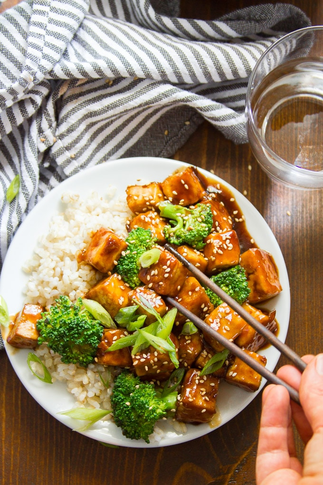

Crispy Baked Teriyaki Tofu

It's not chicken, but it's good!
Tofu and Teriyaki just go together. It's crazy.
Ingredients
- 1 (14 ounce) package extra firm tofu, drained pressed, and cut into 1-inch pieces
- 1 tablespoon soy sauce
- 1 tablespoon canola oil (or high heat oil of choice)
- 1 tablespoon cornstarch
- 1/4 teaspoon white pepper (or black pepper)
For the teriyaki sauce:
- 1/4 cup water
- 1/3 cup soy sauce
- 3 tablespoons brown sugar
- 2 tablespoons rice vinegar
- 2 tablespoons mirin or dry sherry
- 1 teaspoon sesame oil
- 1 teaspoon freshly grated ginger
- 1 garlic clove, minced
- 2 tablespoons chilled water
- 1 tablespoon cornstarch
Steps
- To make the crispy baked tofu, preheat the oven to 400° and line a baking sheet with parchment paper.
- Place the tofu into a medium bowl and add the soy sauce, oil, cornstarch, and pepper. Toss to coat the tofu.
- Arrange the tofu pieces in a single layer on the baking sheet.
- Bake for about 30 minutes, turning halfway through, until browned and crispy.
- While the tofu bakes, prepare the sauce. Stir ¼ cup of water, brown sugar, soy sauce, rice vinegar, sherry, sesame oil, garlic, and ginger together in small saucepan.
- Place the saucepan over medium heat and bring the sauce to a simmer.
- Lower the heat and allow it to simmer for 10 minutes, until reduced by about ⅓.
- Stir the chilled water and cornstarch together in a small bowl or cup. Stir the mixture into the sauce and allow it to simmer for about 1 minute more, until it thickens up a bit.
- Remove the pot from the heat.
- When the tofu is finished cooking, add it to the pot and stir to coat the tofu with sauce.
- Divide onto plates with rice and steamed veggies. Top with sesame seeds and scallions. Serve.